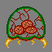
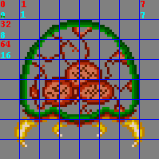
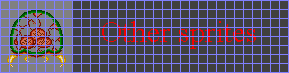
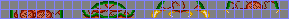

8. 常规精灵
精灵简介

Fig 8.1. Metroid. Rawr.根据韦伯词典,精灵(sprite)是“一种假想的生灵或精神,比如仙女、精灵或妖精“。好,很高兴这说清楚了。不过对于游戏而言,当提到精灵时,通常是指“一个[小型]的、可以从背景中自由移动的动画对象“(PERN)。典型的例子是游戏角色,但状态对象如分数和血条通常也是精灵。右侧的 Fig 8.1 显示了一个大家都喜欢的吸血鬼水母——metroid 的精灵。我将在本章末尾的演示中使用这个精灵。
精灵比位图背景稍难使用一些,但也难不了多少。你只需要多留意自己在做什么。首先,图形必须分组为 8×8 的图块;确保你的图形转换器能做到这一点。除了启用显示控制中的精灵、加载图形和调色板这些明显的动作之外,你还需要在 OAM 中正确设置精灵的属性。漏掉任何一步,你都什么都看不到。这些以及其他内容将在本章介绍。
Essential Sprite Steps
要让精灵显示出来,有 3 件事你必须做对:
- 将图形和调色板加载到对象 VRAM 和调色板中。
- 在 OAM 中设置属性,以使用相应的图块并设置正确的大小。
- 在
REG_DISPCNT中开启对象,并在那里设置映射模式。
Sprites aren’t objects
或者说类似的意思。我知道这听起来奇怪,但我越想越意识到,精灵和对象不应被视为可以互换的。术语“对象“(object)是一个硬件特性,由 OAM 控制。现在我认为“精灵“(sprite)更多是一个概念性的术语,应该保留给演员使用,比如游戏角色、怪物、子弹等。这些实际上可以由多个硬件对象构成,甚至可以使用一个背景。
你也可以这样想:对象是链接到主机本身的系统实体,而精灵是生活在游戏世界中的游戏实体。区别可能微妙,但却很重要。
这仅仅是我个人的看法,我无法确定自己在这方面有多正确。Tonc 仍然在这两个词之间来回切换,因为现在想改也太晚了。Mea culpa(我的错)。我很想听听别人对这个问题的看法,所以如果你愿意,尽管畅所欲言。
精灵图像数据与映射模式
正如我在精灵与背景概述中所说,精灵由若干 8×8 像素的迷你位图组成,称为图块,有两种类型:4bpp(s-图块,长 32 字节)和 8bpp(d-图块,长 64 字节)。可供精灵使用的图块存储在对象 VRAM(object VRAM),简称 OVRAM 中。OVRAM 长 32 KiB,由 tile_mem 的最后两个字符块(charblock)映射出来,这两个块也称为低(块 4,起始于 0601:0000h)和高(块 5,0601:4000h)精灵块。计数总是从低精灵块开始,并且总是以 32 字节的偏移进行,这意味着精灵图块 #1 位于 0601:0020h,无论位深度如何(见表 8.1)。每个字符块有 4000h 字节,简单计算可知每个字符块有 512 个图块,总共范围为 1024。然而,由于位图模式延伸到了低精灵块,在模式 3-5 中你只能使用高精灵块(包含图块 512 到 1023)。
计算这些图块地址可能看起来很烦人,如果要手动计算确实如此。这就是为什么我用名为 tile_mem 的字符块/图块矩阵映射了整个 VRAM,正如在概述中讨论的那样。需要 OVRAM 的第 123 号图块?那就是 tile_mem[4][123]。需要它的地址?使用取地址运算符:&tile_mem[4][123]。快捷、简单、安全。
另外,别忘了精灵有自己的调色板,起始于 0500:0200h(紧跟在背景调色板之后)。如果你确定已经正确加载了图块却什么都没显示,有可能是你填错了调色板。
| memory 0601: | 0000 | 0020 | 0040 | 0060 | 0080 | 0100 | ... |
|---|---|---|---|---|---|---|---|
| 4bpp tile | 0 | 1 | 2 | 3 | 4 | 5 | |
| 8bpp tile | 0 | 2 | 4 | ||||
位图模式与对象 VRAM
在模式 3-5 中,只有高精灵块可用于精灵。不过索引仍然从低块开始,因此图块范围是 512-1023。
精灵映射模式
精灵并不局限于单个图块。实际上,大多数精灵都更大(GBA 精灵可用尺寸的列表见 Table 8.3)。更大的精灵只是简单地使用多个图块,但这可能带来一个问题。对于背景,你通过图块地图显式地选择每个图块。对于精灵,你有两种选择:1D 和 2D 映射。默认是 2D 映射,你可以通过设置 REG_DISPCNT{6} 切换到 1D 映射。
它们是如何工作的?考虑 fig 8.2a 中的示例精灵,展示了 fig 8.1 的 metroid 被划分成图块。在 2D 映射中,你将精灵字符块解释为一块 256×256 像素的大位图,精灵是从该位图中取出的一个矩形(当然仍然划分成图块)。在这种情况下,精灵的每个图块行偏移 32 个图块。这在 fig 8.2b 中显示。另一方面,你也可以将字符块视为一个大图块数组,每个精灵的图块是连续的。这在 fig 8.2c 中显示。fig 8.2a 中的数字显示了 1D 和 2D 映射之间的区别。假设我们从图块 0 开始,红色和青色数字分别遵循 2D 和 1D 映射。
从 GBA 编程的角度看,使用 1D 映射更容易,因为在存储精灵时你不必担心每个图块行的偏移。然而,实际创建精灵在 2D 模式下更容易。我的意思是,你真的想逐个图块地编辑位图吗?我也是这么想的。当然,将精灵从 2D 转换为 1D 映射应该是导出工具的工作。你也可以用 Usenti 来做。
|
 Fig 8.2a：Fig 8.1 的缩小版本，已划分为图块； 彩色数字表示映射模式：2D 为红色，1D 为青色。 |
 Fig 8.2b: how fig 8.2a should be stored in memory when using 2D mapping. Fig 8.2c: how fig 8.2a should be stored in memory when using 1D mapping. |
通过命令行转换对象数据
一些命令行界面可以为对象(以及图块地图)做位图平铺。在某些情况下,它们还可以将带有多个精灵帧的图像转换为 1D 对象映射模式下的一组对象图块。如果 foo.bmp 是一个包含 4 个 16×16 对象的 64×16 位图,下面介绍如何使用 gfx2gba 和 grit 将其转换为 8×8 4bpp 图块(1D 映射的标志在括号中给出)
# gfx2gba
# 4x 16x16@4 objects (C array; u8 foo_Bitmap[], u16 master_Palette[]; foo.raw.c, master.pal.c)
gfx2gba -fsrc -c16 -t8 [-T32] foo.bmp
# grit
# 4x 16x16@4 objects (C array; u32 fooTiles[], u16 fooPal[]; foo.c, foo.h)
grit foo.bmp -gB4 [-Mw 2 -Mh 2]
关于这里的 1D 映射标志有两点说明。首先,gfx2gba 只能元平铺(meta-tile, -T)正方形对象;对于 16×8 这样的对象,你需要自己做 1D 映射。其次,grit 的元平铺标志(-Mw 和 -Mh)可以是任意值,并且使用图块单位,而不是像素。
Size units: tiles vs pixels
位图尺寸的默认单位当然是像素,但在平铺图形中有时使用图块作为基本单位更有用,即像素尺寸除以 8。对于背景来说尤其如此。在大多数情况下,上下文足以表明指的是哪一个,但有时我会用 “p” 表示像素或 “t” 表示图块来标注单位。例如,64x64p 的精灵与 8×8t 的精灵相同。
精灵控制:对象属性内存
这与位图模式大不相同,你不必自己绘制精灵:GBA 有专门的硬件替你完成。这能让精灵比你自己用程序实现更快地出现在屏幕上。不过仍有上限:你能塞进一条扫描线的精灵像素数量是有限的。根据各种论坛的说法,大约是 960。
所以你不必自己绘制精灵;但是,你确实需要告诉 GBA 你希望它们如何显示。这正是对象属性内存(Object Attribute Memory,OAM 的简称)的作用。它起始于地址 0700:0000h,长 1024 字节。你可以在 OAM 中找到两种结构:用于常规精灵属性的 OBJ_ATTR 结构,以及包含变换数据的 OBJ_AFFINE 结构。这些结构的定义见下文。注意,名称可能因站点而异。
typedef struct tagOBJ_ATTR
{
u16 attr0;
u16 attr1;
u16 attr2;
s16 fill;
} ALIGN4 OBJ_ATTR;
typedef struct OBJ_AFFINE
{
u16 fill0[3];
s16 pa;
u16 fill1[3];
s16 pb;
u16 fill2[3];
s16 pc;
u16 fill3[3];
s16 pd;
} ALIGN4 OBJ_AFFINE;
关于这些结构有几点有趣的地方。首先,你会看到很多 fill(填充)字段。其次,如果你将 4 个 OBJ_ATTR 结构叠加在 1 个 OBJ_AFFINE 结构上,如 table 8.2 所示,你会看到其中一个的填充字段正好覆盖另一个的数据,反之亦然。这并非巧合:OAM 实际上是 OBJ_ATTR 和 OBJ_AFFINE 的交织(weave)。任天堂为什么使用交织而不是简单地划分一个属性段和一个变换数据段?这是个好问题,值得一个好答案。等我有答案了会告诉你(我猜是数据对齐方面的原因)。另外,注意 OBJ_AFFINE 的元素是有符号短整数。我因为使用 u16 而不是 s16,在 obj_aff 代码上吃尽了苦头。我们有 1024 字节可用,因此可以容纳 128 个 OBJ_ATTR 结构和 32 个 OBJ_AFFINE。本文件的其余部分将解释只使用 OBJ_ATTR 的常规精灵。我想给仿射变换矩阵应有的完整数学处理,并将仿射精灵留到以后。
| mem (u16) | 0 | 3 | 4 | 7 | 8 | b | c | f |
|---|---|---|---|---|---|---|---|---|
| OBJ_ATTR | 0 1 2 | 0 1 2 | 0 1 2 | 0 1 2 | ||||
| OBJ_AFFINE | pa | pb | pc | pd |
Force alignment on OBJ_ATTRs
从 devkitARM r19 起,关于结构对齐有了新规则,这意味着结构可能并不总是字对齐的,而在 OBJ_ATTR 结构(及其他)的情况下,意味着像后面 oam_update() 中的那种 struct 拷贝不仅会很慢,而且实际上可能出错。因此,我会用 ALIGN4 强制对许多结构进行字对齐,它是 __attribute__((aligned(4))) 的宏。更多信息,请参见数据对齐一节。
对象属性:OBJ_ATTR
每个精灵的基本控制是 OBJ_ATTR 结构。它由三个 16 位的属性组成,用于大小、形状、位置、基础图块等品质。下面分别介绍这三个属性。
属性 0
第一个属性控制很多东西,但最重要的部分是y坐标和精灵的形状。同样重要的是精灵是否可变换(仿射精灵),以及图块被认为是 4 位深度(16 色,16 个子调色板)还是 8 位深度(256 色 / 1 个调色板)。
| F E | D | C | B A | 9 8 | 7 6 5 4 3 2 1 0 |
| Sh | CM | Mos | GM | OM | Y |
| bits | name | define | description |
|---|---|---|---|
| 0-7 | Y | ATTR0_Y# | Y coordinate. Marks the top of the sprite. |
| 8-9 | OM | ATTR0_REG, ATTR0_AFF, ATTR0_HIDE, ATTR0_AFF_DBL. ATTR0_MODE# | (Affine) object mode. Use to hide the sprite or govern
affine mode.
|
| A-B | GM | ATTR0_BLEND, ATTR0_WIN. ATTR0_GFX# | Gfx mode. Flags for special effects.
|
| C | Mos | ATTR0_MOSAIC | Enables mosaic effect. Covered here. |
| D | CM | ATTR0_4BPP, ATTR0_8BPP | Color mode. 16 colors (4bpp) if cleared; 256 colors (8bpp) if set. |
| E-F | Sh | ATTR0_SQUARE, ATTR0_WIDE, ATTR0_TALL. ATTR0_SHAPE# | Sprite shape. This and the sprite's size
(attr1{E-F}) determines the sprite's real size, see
table 8.4.
|
关于属性 0 有两条额外说明。首先,attr0 包含y坐标;attr1 包含x坐标。出于某种原因,我总是把这两个搞混;如果你的精灵本该向上移动却向左移动了,这可能就是原因。其次,仿射模式和图形模式并不总是这样命名。特别是,attr0{9} 仅仅被称为双尺寸(double-size)标志,尽管它只有第 8 位也置位时才起这个作用。如果不是,那么它隐藏精灵。我认为它实际上被从对象渲染阶段完全移除了,从而为其他对象留出更多时间,但我对此不是 100% 确定。
| shape\size | 00 | 01 | 10 | 11 |
|---|---|---|---|---|
| 00 | 8×8 | 16×16 | 32×32 | 64×64 |
| 01 | 16×8 | 32×8 | 32×16 | 64×32 |
| 10 | 8×16 | 8×32 | 16×32 | 32×64 |
属性 1
这个属性主要的部分是x坐标和精灵的大小。位 9 到 13 的作用取决于这是否是仿射精灵(由 attr0{8} 决定)。如果是,这些位指定应使用 32 个 OBJ_AFFINE 中的哪一个。如果不是,它们保存翻转标志。
| F E | D | C | B A 9 | 8 7 6 5 4 3 2 1 0 |
| Sz | VF | HF | - | X |
| - | AID | - | ||
| bits | name | define | description |
|---|---|---|---|
| 0-8 | X | ATTR1_X# | X coordinate. Marks left of the sprite. |
| 9-D | AID | ATTR1_AFF# | Affine index. Specifies the OAM_AFF_ENTY this
sprite uses. Valid only if the affine flag
(attr0{8}) is set.
|
| C-D | HF, VF | ATTR1_HFLIP, ATTR1_VFLIP. ATTR1_FLIP# | Horizontal/vertical flipping flags. Used only if
the affine flag (attr0) is clear; otherwise they're
part of the affine index.
|
| E-F | Sz | ATTR1_SIZE# | Sprite size. Kinda. Together with the shape bits
(attr0{E-F}) these determine the sprite's real size,
see table 8.3.
|
我在这里也要说:attr0 包含 y,attr1 包含 x。注意位 12 和 13 有双重角色,既可以是翻转标志,也可以是仿射索引。如果你想知道是否还能翻转仿射精灵,答案是肯定的:只需在矩阵中使用负的缩放值即可。
属性 2
这个属性告诉 GBA 要显示哪些图块,以及它的背景优先级。如果是 4bpp 精灵,这里也是说明应使用哪个子调色板的地方。
| F E D C | B A | 9 8 7 6 5 4 3 2 1 0 |
| PB | Pr | TID |
| bits | name | description | |
|---|---|---|---|
| 0-9 | TID | ATTR2_ID# | Base tile index of sprite. Note that in bitmap modes, this must be 512 or higher. |
| A-B | Pr | ATTR2_PRIO# | 优先级。优先级高的先绘制（因此
可能被后绘制的精灵和背景覆盖）。精灵会覆盖
同优先级的背景；对于同优先级的精灵，
OBJ_ATTR 序号较大的先绘制。
|
| C-F | PB | ATTR2_PALBANK# | Palette bank to use when in 16-color mode. Has no effect if
the color mode flag (attr0{C}) is set.
|
属性 3
没有属性 3。尽管 OBJ_ATTR 结构确实有第四个半字,但这只是一个填充。该填充中的内存实际上属于 OBJ_AFFINE。如果任何仿射精灵处于活动状态,谁也不能以任何方式滥用 attr3……
OAM 双缓冲
你可以将所有精灵数据直接写入位于 0700:0000h 的 OAM,但那并不总是最好的做法。如果这在 VDraw(垂直绘制)期间完成,可能会出现撕裂。更糟的是,你可能会在渲染中途改变精灵的图块索引,导致上半部分在一个动画帧,下半部分在另一个。那可不好看。实际上,这无需担心,因为你不能在 VDraw 期间更新 OAM;那时它被锁定了。常见的做法是创建一个独立的 OAM 条目缓冲区(也称为对象影子,object shadow),可以随时修改,然后在 VBlank 期间将其复制到真正的 OAM。这是我的做法。
OBJ_ATTR obj_buffer[128];
OBJ_AFFINE *const obj_aff_buffer= (OBJ_AFFINE*)obj_buffer;
我现在用了 128,但我想如果你不使用所有精灵,可以用更小的数字。总之,现在你有了一个用于 OBJ_ATTR 和 OBJ_AFFINE 数据的双缓冲,这在任何时刻都可用。只需确保在恰当的时机将它复制到真正的 OAM。
位域宏(OAM 或其他)
设置和清除单个位很容易,但有时全部自己来做并不太方便。对于位置和调色板库这样的位域尤其如此,如果要做得漂亮,会涉及带掩码和移位的冗长语句。为了稍微改进这一点,我有一组宏可以缩短实际代码量。这里本质上宏有三类,但在介绍之前,我得先解释一下上面属性列表中带哈希(foo‘#’)的 define 多一点。
哈希意味着,对于其中的每一个,都会有三个以 foo 为根的 #define:foo_MASK、foo_SHIFT 和 foo(_n)。它们给出相应类型的位掩码、位移和一个位域设置宏。
例如,附加在图块索引上的 ATTR2_ID#。图块索引字段有 10 位,从位 0 开始。因此相应的 define 是:
// The 'ATTR2_ID#' from the attr2 list means these 3 #defines exist
#define ATTR2_ID_MASK 0x03FF
#define ATTR2_ID_SHIFT 0
#define ATTR2_ID(n) ((n)<<ATTR2_ID_SHIFT)
大多数 GBA 库都有这样的 #define,只是名字不同。实际的宏并不是 100% 安全,因为它不做范围检查,但它简短而精练。就 Tonc 的文本而言,每次你在寄存器的 define 列表中看到哈希,就意味着该名字会带有这三个 #define。
我还有第二批宏,可用于设置和获取特定字段,它们使用上面解释的掩码和移位名称。我承认这些宏看起来很恐怖,但我向你保证它们有意义,而且能派上用场。
// bit field set and get routines
#define BF_PREP(x, name) ( ((x)<<name##_SHIFT)& name##_MASK )
#define BF_GET(x, name) ( ((x) & name##_MASK)>> name##_SHIFT )
#define BF_SET(y, x, name) (y = ((y)&~name##_MASK) | BF_PREP(x,name) )
#define BF_PREP2(x, name) ( (x) & name##_MASK )
#define BF_GET2(y, name) ( (y) & name##_MASK )
#define BF_SET2(y, x, name) (y = ((y)&~name##_MASK) | BF_PREP2(x, name) )
好吧,我确实警告过你了。name 参数就是之前的 foo。预处理器连接运算符用来创建完整的掩码和移位名称。再次以图块索引为例,这些宏展开为以下内容:
// Create bitfield:
attr2 |= BF_PREP(id, ATTR0_SHAPE);
// becomes:
attr2 |= (id<<ATTR2_ID_SHIFT) & ATTR2_ID_MASK;
// Retrieve bitfield:
id= BF_GET(attr2, ATTR2_ID);
// becomes:
id= (attr2 & ATTR2_ID_MASK)>>ATTR2_ID_SHIFT;
// Insert bitfield:
BF_SET(attr2, id, ATTR2_ID);
// becomes:
attr2= (attr&~ATTR2_ID_MASK) | ((id<<ATTR2_ID_SHIFT) & ATTR2_ID_MASK);
BF_PREP() 可用于准备一个位域以便稍后插入或比较。BF_GET() 从值中获取一个位域,BF_SET() 在变量中设置一个位域,而不干扰其余的位。这基本上就是位域通常的工作方式,只是真正的位域不能与 OR 等组合。
名字中带“2“的宏工作方式类似,但不做移位。当你已有像 ATTR0_WIDE 这样已经移位过的 #define 时,它们会很有用,此时无法使用其他的宏。
// Insert pre-shifted bitfield:
// BF_SET2(attr0, ATTR0_WIDE, ATTR0_SHAPE);
attr0= (attr0&~ATTR0_SHAPE_MASK) | (id & ATTR0_SHAPE_MASK);
注意,这三组宏中没有一个是 GBA 特有的;它们可以用在任何平台上。
最后,是我所谓的构建宏(build macros)。它们将各种位标志有序地拼成单一数字,类似于 HAM 的工具宏。我还没怎么用过它们,也不强迫你用,但偶尔在初始化附近它们会很有用。
// Attribute 0
#define ATTR0_BUILD(y, shape, bpp, mode, mos, bld, win) \
( \
((y)&255) | (((mode)&3)<<8) | (((bld)&1)<<10) | (((win)&1)<<11) \
| (((mos)&1)<<12) | (((bpp)&8)<<10) | (((shape)&3)<<14) \
)
// Attribute 1, regular sprites
#define ATTR1_BUILD_R(x, size, hflip, vflip) \
( ((x)&511) | (((hflip)&1)<<12) | (((vflip)&1)<<13) | (((size)&3)<<14) )
// Attribute 1, affine sprites
#define ATTR1_BUILD_A(x, size, aff_id) \
( ((x)&511) | (((aff_id)&31)<<9) | (((size)&3)<<14) )
// Attribute 2
#define ATTR2_BUILD(id, pbank, prio) \
( ((id)&0x3FF) | (((pbank)&15)<<12) | (((prio)&3)<<10) )
你不必自己用 OR 把位标志组合在一起,可以使用这些宏,也许能省点打字。参数顺序对有些人来说可能难以记住,安全检查的程度可能有点过头(哎呀,你觉着呢?!?),但如果你给它们的数字是常量,操作会在编译时完成,所以没关系,而且有时它们确实很有帮助。或者没帮助 :P。正如我所说,我不强迫你使用它们;如果你认为它们是糟糕的代码(我承认它们是),并且不想用它们玷污你的程序,那没问题。
注意,除了 bpp 之外,参数都被宏移位了,这意味着你不应使用列表中的 #define 标志,只应使用像它们是独立变量而非变量中位那样的小值。
演示时间
现在,来真正使用这些该死的东西。下面的代码是 obj_demo 的一部分。这是我展示过的最复杂的,但如果你一步一步来,就没问题。本质上,这个演示将一个盒装 metroid 的图块放入分配给对象的 VRAM 中,然后让你摆弄各种 OBJ_ATTR 位,比如位置和翻转标志。控制方式如下:
- 方向键
移动精灵。注意,如果你移动得足够远离开屏幕,它会从另一侧出现。 - A 和 B 键
分别水平或垂直翻转精灵。 - Select 键
让它发光。嗯,实际上是让它调色板交换。对受伤闪烁很有用。 - Start 键
在 1D 和 2D 映射模式之间切换。Fig 8.2b 和 fig 8.2c 应该能解释发生了什么。由于精灵处于 1D 模式,切换到 2D 映射时其实没什么可看的,但我有几个多余的按键,所以我想,为什么不呢。 - L 和 R 键
分别减少或增加起始图块。同样,我有些多余的键。
// Excerpt from toolbox.h
void oam_init(OBJ_ATTR *obj, uint count);
void oam_copy(OBJ_ATTR *dst, const OBJ_ATTR *src, uint count);
INLINE OBJ_ATTR *obj_set_attr(OBJ_ATTR *obj, u16 a0, u16 a1, u16 a2);
INLINE void obj_set_pos(OBJ_ATTR *obj, int x, int y);
INLINE void obj_hide(OBJ_ATTR *oatr);
INLINE void obj_unhide(OBJ_ATTR *obj, u16 mode);
// === INLINES ========================================================
//! Set the attributes of an object.
INLINE OBJ_ATTR *obj_set_attr(OBJ_ATTR *obj, u16 a0, u16 a1, u16 a2)
{
obj->attr0= a0; obj->attr1= a1; obj->attr2= a2;
return obj;
}
//! Set the position of \a obj
INLINE void obj_set_pos(OBJ_ATTR *obj, int x, int y)
{
BF_SET(obj->attr0, y, ATTR0_Y);
BF_SET(obj->attr1, x, ATTR1_X);
}
//! Hide an object.
INLINE void obj_hide(OBJ_ATTR *obj)
{ BF_SET2(obj->attr0, ATTR0_HIDE, ATTR0_MODE); }
//! Unhide an object.
INLINE void obj_unhide(OBJ_ATTR *obj, u16 mode)
{ BF_SET2(obj->attr0, mode, ATTR0_MODE); }
// toolbox.c
void oam_init(OBJ_ATTR *obj, uint count)
{
u32 nn= count;
u32 *dst= (u32*)obj;
// Hide each object
while(nn--)
{
*dst++= ATTR0_HIDE;
*dst++= 0;
}
// init oam
oam_copy(oam_mem, obj, count);
}
void oam_copy(OBJ_ATTR *dst, const OBJ_ATTR *src, uint count)
{
// NOTE: while struct-copying is the Right Thing to do here,
// there's a strange bug in DKP that sometimes makes it not work
// If you see problems, just use the word-copy version.
#if 1
while(count--)
*dst++ = *src++;
#else
u32 *dstw= (u32*)dst, *srcw= (u32*)src;
while(count--)
{
*dstw++ = *srcw++;
*dstw++ = *srcw++;
}
#endif
}
这是演示的基本工具代码,包含了你真正需要为其编写函数的大部分内容。注意内联函数很好地利用了前面展示的位域宏;如果我不这么做,代码会更长。
我需要说明的另一点是,如果我把所有东西都放进 toolbox.h,文件会相当大,大约 700 行左右。而有了未来的演示,它会更长。考虑到这一点,我开始将内容重新分配:types.h 中放所有类型,与内存映射相关的一切放入 memmap.h,所有寄存器 define 放入 memdef.h,输入内联函数和宏可以在 input.h 中找到。其余的仍在 toolbox.h 中,但最终也会被重新分配。
toolbox.c 中的两个函数我想也需要更多说明。在 oam_init() 中,我将对象转换为字指针,并用它来设置内容;同样,这仅仅是因为它快得多。因为它可能用于初始化真 OAM 之外的东西,所以我将初始化后的缓冲区复制到 OAM 以防万一。
另一点与当前编译器(devkitARM r19b)优化器的一个非常具体的 bug 有关。我希望这在以后的版本中能修复,这里的基本版本应该能工作,但以防万一,如果你看到 OAM 被破坏,就把 #if 表达式设为 0。如果你非要知道,问题似乎是在 for 循环中 OBJ_ATTR 的 struct 拷贝。是的,就是这么具体。尽管 struct 拷贝在它们字对齐时是合法且快速的,但 GCC 似乎在循环中处理 8 字节块时会感到困惑,并且无论如何都为每个结构使用 memcpy(),而这在 OAM 上是行不通的。哦,好吧。
#include <string.h>
#include "toolbox.h"
#include "metr.h"
OBJ_ATTR obj_buffer[128];
OBJ_AFFINE *obj_aff_buffer= (OBJ_AFFINE*)obj_buffer;
void obj_test()
{
int x= 96, y= 32;
u32 tid= 0, pb= 0; // (3) tile id, pal-bank
OBJ_ATTR *metr= &obj_buffer[0];
obj_set_attr(metr,
ATTR0_SQUARE, // Square, regular sprite
ATTR1_SIZE_64, // 64x64p,
ATTR2_PALBANK(pb) | tid); // palbank 0, tile 0
// (4) position sprite (redundant here; the _real_ position
// is set further down
obj_set_pos(metr, x, y);
while(1)
{
vid_vsync();
key_poll();
// (5) Do various interesting things
// move left/right
x += 2*key_tri_horz();
// move up/down
y += 2*key_tri_vert();
// increment/decrement starting tile with R/L
tid += bit_tribool(key_hit(-1), KI_R, KI_L);
// flip
if(key_hit(KEY_A)) // horizontally
metr->attr1 ^= ATTR1_HFLIP;
if(key_hit(KEY_B)) // vertically
metr->attr1 ^= ATTR1_VFLIP;
// make it glow (via palette swapping)
pb= key_is_down(KEY_SELECT) ? 1 : 0;
// toggle mapping mode
if(key_hit(KEY_START))
REG_DISPCNT ^= DCNT_OBJ_1D;
// Hey look, it's one of them build macros!
metr->attr2= ATTR2_BUILD(tid, pb, 0);
obj_set_pos(metr, x, y);
oam_copy(oam_mem, obj_buffer, 1); // (6) Update OAM (only one now)
}
}
int main()
{
// (1) Places the tiles of a 4bpp boxed metroid sprite
// into LOW obj memory (cbb == 4)
memcpy(&tile_mem[4][0], metr_boxTiles, metr_boxTilesLen);
memcpy(pal_obj_mem, metrPal, metrPalLen);
// (2) Initialize all sprites
oam_init(obj_buffer, 128);
REG_DISPCNT= DCNT_OBJ | DCNT_OBJ_1D;
obj_test();
while(1);
return 0;
}
设置精灵
在任何精灵显示出来之前,有三件事你必须做,尽管顺序不一定如此。它们是:将精灵图形复制到 VRAM,设置 OAM 以使用这些图形,以及在显示控制 REG_DISPCNT 中启用精灵。
显示控制
从最后一个开始,通过设置 REG_DISPCNT 的第 12 位来启用精灵。通常你还想使用 1D 映射,所以也设置第 6 位。这在代码的标号 (2) 处完成。
隐藏所有精灵
这里执行的另一步是对 oam_init() 的调用。这并非严格必要,但无论如何是个好主意。oam_init() 的作用是隐藏所有精灵。为什么这是个好主意?因为如果 OAM 全为零,并不意味着精灵不可见。如果你检查属性,你会看到这意味着它们都是 8×8 像素的精灵,使用图块 0 作为图形,位于 (0,0)。如果第一个图块不是空的,你会从屏幕左上角开始看到 128 个该图块的副本,看起来相当奇怪。所以,确保它们先全部不可见。演示还附带了 obj_hide() 和 obj_unhide() 函数,尽管这里没有用到。
加载精灵图形
要做的第一件事(标号 (1))是将精灵图形存入对象 VRAM。正如我已经说过好几次,这些图形应存储为 8×8 像素的图块,而不是扁平的位图。例如,我的精灵这里是 64×64p 大小,所以要存储它,我必须先将其转换为 8×8 的独立图块。如果你不这样做,你的精灵看起来会非常奇怪。
你把这些图块放在哪里其实并不那么重要(除了显而易见的因素,比如映射模式和图块对齐,当然)。对象 VRAM 就像一个纹理池,与屏幕没有直接关系。你存储想要可用的图块,而系统是通过操纵 OAM 属性才知道你想使用哪些图块以及把它们放在哪里。精灵 0 没有理由不能从图块 42 开始,也没有理由多个精灵不能使用相同的图块。这也是为什么有时用于对象 VRAM 的 OAMData 如此名不副实:对象 VRAM 与 OAM 毫无关系。毫无关系!如果你的头文件用这个名字表示 0601:0000,甚至 0601:4000,请改掉它。拜托。并且在位图模式中要注意放置位置,因为你不能使用那里的图块 0-511。
正如我所说,精灵的加载发生在代码的标号 (1)。如果你留意过概述,你会记得 tile_mem[][] 是一个二维数组,映射字符块和 4 位图块。你也会记得对象 VRAM 是字符块 4 和 5,所以 &tile_mem[4][0] 指向对象 VRAM 中的第一个图块。所以我将盒装 metroid 加载到对象 VRAM 的前 64 个图块中。
我还将它的调色板加载到精灵调色板。那是精灵调色板(0500:0200),不是背景调色板。加载到错误的地方你就什么也看不到。
Finding tile addresses
使用 tile_mem 或宏来查找要复制图块的地址,这比手动计算它们更具可读性和可维护性。你的代码中永远不应该有任何硬编码的 VRAM 地址。
OAMData
其他站点的头文件有时将 #define OAMData 定义为 VRAM 的一部分。它不是。请重命名它。
设置属性
最后,我将设置一个 OBJ_ATTR,使它真正使用 metroid 图块。这在使用 obj_set_attr() 内联函数的标号 (3) 处完成。顺便说一句,它所做的只是对第一个参数的属性做三次赋值,没有什么了不起。这样做只是比三条独立语句省打字。通过这一次调用,我告诉这个精灵它是一个 64×64 像素(8×8 图块)的精灵,其起始图块是 tid,即 0。这意味着它将使用从图块 0 开始的 64 个图块。
注意我设置的精灵实际上是 OAM 缓冲区的一部分,而不是真正的 OAM。这意味着即使我在那里设置了属性,也还没有发生任何事。要完成精灵,我需要更新真正的 OAM,这是通过调用 oam_copy()(标号 (6))完成的。它带两个参数:一个索引和一个表示要更新多少精灵以及从哪个精灵开始的计数。我还有 obj_copy(),它只复制属性 0、1 和 2,但不复制 3!当你开始使用仿射精灵时这是必要的,否则它们可能会被错误复制。
前面的步骤足以让 metroid 精灵显示在屏幕上。当然,故事并未到此结束。这里有几件你可以用精灵做的事。
精灵定位
最优先的事通常是把它放在屏幕上的某个位置,甚至屏幕外。为此,你必须分别更新属性 0 和 1 中的 y 和 x 位置位。我经常犯的一个错误是把 x 填入 attr0、把 y 填入 attr1,而应该是反过来。如果你的精灵移动得很奇怪,这可能就是原因。
注意这些坐标标记的是精灵的左上角。另外,坐标的位数意味着我们有 512 个可能的 x 值和 256 个 y 值。坐标范围会回绕,所以你也可以说它们是有符号整数,范围为 x ∈ [-256, 255] 和 y ∈ [-128, 127]。是的,这会使最高的 y 值小于屏幕高度,但多亏了回绕,一切都正常。总之,多亏了整数的 2 的补码特性,只需分别用 0x01FF 和 0x00FF 对 x 和 y 值进行掩码,就能得到正确的 9 位和 8 位有符号值。你可以手动做,或者使用标号 (4) 处用到的 obj_set_pos() 函数。
你可能会看到清除属性低位然后直接将 x 和 y OR 进去的代码。这不是个好主意,因为负值实际上是由数据类型范围的上半部分表示的。例如 −1 是所有位都置位(0xFFFFFFFF)。如果不屏蔽掉高位,负值会覆盖属性的其余位,那会很糟。
Mask your coordinates
如果你在编写精灵定位函数或使用别人的请务必在将 x 和 y 插入属性之前屏蔽掉这些位。否则,负值会覆盖整个属性。
这样不好:
obj->attr0= (obj->attr0 &~ 0x00FF) | (y);
这样好:
obj->attr0= (obj->attr0 &~ 0x00FF) | (y & 0x00FF);
位置变量与三态键(tribool)的使用
与其使用 OBJ_ATTR 来存储精灵的位置,不如将它们保存在独立的变量中,这里是 x 和 y。这避免了总是要掩码坐标字段,但更重要的是,位置可以延伸到屏幕大小之外。由于大多数游戏世界并不局限于单个屏幕,这一点很重要。然后,在恰当时机,将这些值传给 oam_set_pos() 来更新精灵。
另外,注意我使用三态键函数来更新位置。输入处理通常遵循这样的模式:“按下键 X:递增;按下相反方向的键 Y:递减”。三态键函数把这类代码从四行缩减为一行,这让代码更易读(一旦你跨过了最初的门槛)。例如,key_tri_horz() 在按下“右“时返回 +1,按下“左“时返回 −1,都没有按下或都按下时返回 0。key_tri_vert() 对垂直移动做类似的事情,而带有 bit_tribool() 的那行则使用 key_hit() 以及 R 和 L 来递增或递减图块索引。
其他属性
精灵坐标只是可以通过特定 OAM 位控制的众多精灵属性中的两个,即使精灵已经激活。一些明显的例子是翻转或镜像,这里可以用 A 和 B 来做。或者,如果你使用的是 4bpp 精灵,你可以交换调色板,使所有颜色改变。在演示中按下 Select 会从调色板库 0 切换到 1,后者恰好有一个从灰到白的渐变。在这两个调色板库之间快速切换可以让精灵闪烁。你也可以改变精灵渲染的优先级,或切换 alpha 混合,尽管我在这里没有做这些。
现在,这些东西并不会真正改变精灵的整体图像。但你应该意识到,确实可以那样做。正如我之前指出的,VRAM 的内容就是精灵这种说法并不正确,更准确地说,精灵使用 VRAM 的某些部分在屏幕上显示某物,任何东西。例如,你可以改变精灵使用的起始图块 tid,在这里可以用 L 和 R 实现。这不仅合法,而且是动画的标准做法(尽管你也可以为此覆盖 VRAM——重置图块索引只是更快)。理解这一点是从用户视角转向开发者视角的关键点之一:用户只看到表面;而编码者看透表面,看到真正发生了什么。
常规精灵就讲到这里。使用多个精灵并没有太大不同——见一个,就见过全部了。基本动画也不应该有什么问题,直到你用完存放它们的 VRAM。还有一些区域未被触及,比如混合和马赛克,但我会在以后处理它们。